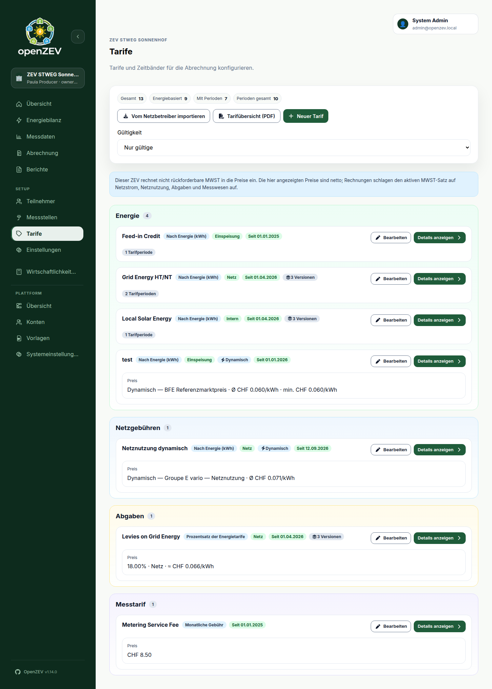
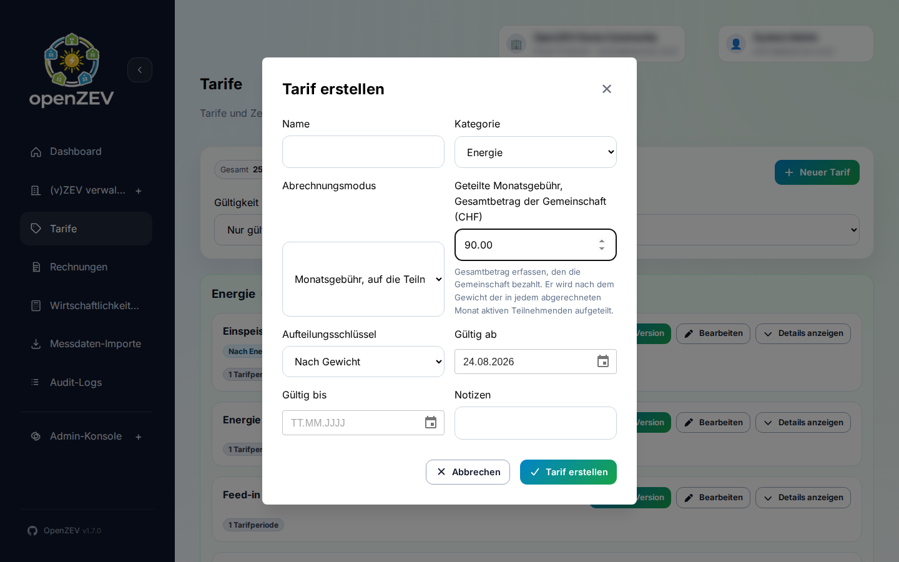
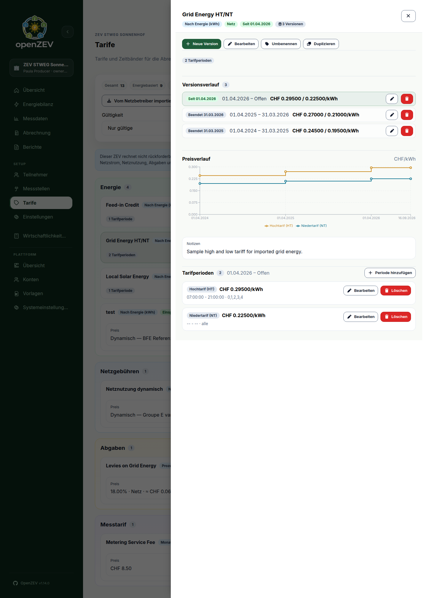

Tariff Configuration¶
This guide covers setting up tariffs and pricing in OpenZEV.
What is a Tariff?¶
A tariff is a pricing rule that defines how to charge participants for energy.
Each tariff has:
- a Category —
Energy,Grid Fees,LeviesorMetering Tariff(groups the lines on the invoice) - a Billing mode — per kWh (By energy), a Percentage of energy tariffs, or a fixed fee (monthly, yearly, per metering point, or shared across the community)
- for per-kWh tariffs, an Energy type — which energy it prices:
- Local — energy supplied within the community (solar)
- Grid — energy imported from the external grid
- Feed-in — credit for production fed back

Creating a Tariff¶
ZEV Owners create tariffs in Tariffs.
- Click New Tariff
-
Enter details:
- Name — Tariff identifier, printed on invoice lines (e.g., "Local solar")
- Category, Billing mode and — for per-kWh tariffs — Energy type (see above)
- Notes (optional)
-
Set Validity Period:
- Valid From — Start date
- Valid To — End date (leave blank for ongoing)
Tip: Leave Valid To blank. When the price later changes, use New version rather than editing or creating a second tariff — see Tariff Versions.
-
Configure pricing: the fixed amount for a fee, the initial percentage for a percentage tariff (the tariff starts with one flat band at that percentage — you can split it into time-of-use bands afterwards, see Percentage of Energy Tariff), or — for a per-kWh tariff — a dynamic price source if it has one
-
Click Save Tariff
-
For a per-kWh or percentage tariff with fixed bands, add its prices as Tariff Periods — a tariff without a band prices nothing
Importing Tariffs from Your Grid Operator¶
Swiss grid operators publish their tariffs in machine-readable form every year (Art. 7b StromVV). Rather than transcribing next year's prices by hand, point OpenZEV at that file and it will show you exactly what it would create.
Running an import¶
- Go to Tariffs and click Import from grid operator.
- Paste the Tariff document URL — usually a
.jsonfile linked from your operator's tariff page. If you stored it under Settings → Grid Connection → Tariff document URL, it is filled in for you. - Click Read document. Nothing is saved at this point. You get a table of everything the document offers, with a Status for each row.
- Tick what you want. Select standard tariffs ticks only what the operator itself flags as its standard product — a document can carry 35 rows when your community needs four, so nothing is pre-ticked wholesale.
- Click Import N tariffs.
Leave Remember this address for next year's tariffs ticked and the URL is stored on the ZEV, so next year's refresh is one click.
One published tariff can become two¶
A published tariff often carries both a monthly base price (Grundpreis) and a per-kWh energy price (Arbeitspreis). An OpenZEV tariff is billed one way or the other, never both, so such an entry is imported as two tariffs:
Netznutzung Basis (Grundpreis) CHF 7.00/month
Netznutzung Basis (Arbeitspreis) CHF 0.284/kWh
Those suffixes are your operator's own words, and they appear on invoice lines, so a participant comparing an invoice against the published tariff sheet sees matching vocabulary.
Choosing how a fee is billed¶
The document says a base price is CHF per month. It cannot say who pays it — that depends on how your community relates to its operator. So each fee row has a Billed as picker, and the choice is yours:
| Billed as | When it is right |
|---|---|
| Shared monthly fee (default) | The usual ZEV: the operator bills the community once for its connection, and the fee is split across participants |
| Monthly fee | A vZEV whose participants each hold their own contract with the operator |
| Per metering point, monthly | A charge levied per meter — a metering fee is the typical case |
Getting this wrong bills the same connection several times over, so the picker never guesses on your behalf beyond the default.
What the statuses mean¶
| Status | Meaning | Imported? |
|---|---|---|
| New | Nothing like it in this community yet | Yes |
| New version | You already have this tariff; the document carries a later price. See Tariff Versions | Yes |
| Already imported | A version already starts on that date — you have imported this document before | No |
| Name conflict | A tariff of that name exists but means something else (a different category or energy type), which cannot be reconciled automatically | No |
| Not supported | The entry cannot be represented — the row says why | No |
Only New and New version rows can be ticked.
Importing next year's document¶
Re-importing is the normal yearly workflow, and it is safe to run twice:
- Rows you have already imported come back as Already imported and are left alone. Nothing is rewritten.
- A newer price arrives as New version. Your existing version is closed the day before the new one starts, so the two never overlap and no period is billed twice.
- If you renamed a tariff after importing it, the new version still lands in it. OpenZEV records which published price each tariff came from, so it recognises your renamed tariff as the same one; the row says Will be added to "your name", and it keeps the name you gave it.
- The way you chose to bill a fee is remembered. Next year's document proposes the default again, but the import matches what you already decided rather than refusing the row.
What is not imported¶
These are reported in the preview rather than skipped silently — a row that cannot be imported always says why:
- Power / demand charges (CHF/kW) — OpenZEV does not bill demand, and no demand data is metered.
- Reactive-power charges (CHF/kVarh).
- Storage grid-usage refunds.
- A dynamic tariff with no fetchable URL, or a component with no billable energy value in CHF/kWh. V2 metering components are supported when they publish an energy price.
- Prices in a unit that cannot be billed — an energy price not in CHF/kWh, or a base price not in CHF/month — and negative prices.
Where a published price is more precise than OpenZEV stores, it is rounded and the row tells you so.
Dynamic tariffs¶
Some operators no longer publish a fixed price at all — they publish a URL that serves a new price every quarter-hour. Importing one of these creates a tariff linked to that price source instead of to fixed bands; OpenZEV fetches it on a schedule and bills each reading at whatever the series says for that moment, negative prices included.
- The import preview marks a dynamic row with a Dynamic badge and shows the URL it will fetch from, instead of a list of prices — there is nothing to list yet.
- The document never names which product the source should use (an operator like Groupe E publishes several, at materially different prices). Enter the correct product name in the preview before importing. Leaving the visible product field blank explicitly confirms the endpoint default. V2 product names returned by discovery are retained with the source.
- On the Tariffs page, a dynamic tariff shows a Dynamic badge next to its energy type. The badge turns red, with the failure shown as a tooltip, if the source's last scheduled fetch failed.
- You can also link a plain energy tariff to an existing dynamic source by hand, from the tariff's edit form — useful once a source has already been created by an earlier import.
Reading a dynamic tariff's price¶
An operator's fetched price changes every quarter-hour, so the Tariffs page
shows a representative average instead of a rate: Avg CHF 0.123/kWh,
with a tooltip explaining the reference window. It is weighted by interval
duration over the trailing 30 days within the tariff's validity — not a fixed
rate, and the contract and tariff overview say so in a footnote.
The BFE reference market price (below) publishes one price per quarter, and only weeks after that quarter has ended, so its trailing 30 days would always be empty. For that kind of source the window ends at the last fully published day instead of at today; the reference dates beside the figure say which period it covers.
For a percentage tariff, the base uses grid tariffs and prices at today, clamped to the displayed version's validity. A historical percentage version therefore uses its historical base, not the latest average of an ongoing grid tariff.
- Partial means the window has gaps; the average covers only what was fetched.
- Price unavailable (or base price unavailable on a percentage tariff) means nothing was fetched for the window. No substitute number is shown, and a percentage tariff built on it has no base either — printing a partial sum would understate the rate.
Feed-in at the BFE reference market price¶
Many operators pay feed-in remuneration as the greater of a minimum price they guarantee or the federal reference market price for the period. Since 1 January 2026 that is also the statutory default when nothing else is agreed (Art. 15 EnG/EnV, reference price per Art. 15 EnFV).
Set this up in two parts:
- Add the reference price as a source. In the dynamic source dialog, choose the kind BFE reference market price instead of an operator endpoint. Pick the series your installation reports on — quarterly or monthly — and the technology (photovoltaics for a normal rooftop ZEV). There is no URL to enter and nothing to discover: OpenZEV downloads the federal publication and stores its whole history, back to Q3 2023, the moment you save.
- Link a feed-in tariff to it and enter the minimum. On a feed-in tariff with that source selected, the form shows Minimum price (CHF/kWh). Leave it empty if your operator pays the reference price flat.
Every exported kWh is then credited at whichever is higher for that moment.
The Tariffs page shows the reference average with min. CHF 0.080/kWh beside
it, and the tariff overview PDF prints the rate together with the guaranteed
minimum.
- A quarter can only be billed once BFE has published it — roughly ten working days after the quarter ends. Until then the period counts as unpriced: readiness names the days and invoice generation refuses, rather than falling back to the minimum and under-crediting a producer whose reference price later turns out to be higher.
- The minimum is part of a tariff version. Renegotiating it means creating a new version from the date it changes, exactly like any other price.
- The figures are federal open data (
Opendata BY). Reusing them outside OpenZEV — a newsletter, your own report — requires naming the source, the Swiss Federal Office of Energy (BFE).
Operating a price source (administrators)¶
Sources live under Platform → Overview → Dynamic prices and are shared across communities: two ZEVs on the same operator product fetch once, together.
- Status is
Healthy,Failed(with the user-safe error),Not fetched, orDisabled. A source with an unresolved older window showsRetry from <date>— the earliest range a refresh still needs to fill. - Disable a dead endpoint with the Enable scheduled fetches toggle instead of deleting it: stored prices stay as billing evidence, the schedule skips it, and the tariff keeps billing from history.
- Refreshes run every 4 hours over yesterday → two days ahead (operators republish during the day; day-ahead prices arrive in the afternoon). A new enabled source additionally fetches up to 400 days of history once, right after import. Disabled sources do not start automatic fetches; an explicit administrator fetch is still available. Re-enabling an old source fetches at most 14 days on a scheduled run; use backfill for older missing history.
- 404 is a failure by default. If the operator documents that this URL uses 404 for an empty publication, an administrator can enable empty_on_not_found on the source in Django admin. This opt-in treats every 404 as empty, including a removed product; verify the URL when gaps persist. Rechecking capabilities preserves this setting. 410 always fails.
Recovering a refused price series¶
- BilledPriceChanged: an operator changed a price or interval already retained for an invoice. The original remains stored. Check the operator's publication and affected invoices before correcting or cancelling invoices; retries cannot reconcile conflicting billing evidence. On a BFE reference price source this also stops newly published quarters from arriving, because every fetch re-reads the whole federal history and the conflict fails the run as a whole. Resolve the revised quarter — cancel or correct the affected invoice, then clear the source's prices — rather than waiting for the next scheduled refresh.
- PriceIntervalConflict: a replacement is overlapping or incomplete. Backfill the complete unbilled range. A complete replacement can change interval resolution atomically while preserving billed historical intervals. A partial replacement that changes a price is refused without clipping either boundary. A same-priced response clipped at a fetch boundary safely extends only the uncovered portion and keeps the existing stored boundary. If the endpoint no longer serves the complete interval, keep the old series and create a replacement source/version for future pricing.
- PriceSeriesConflict: the run reports one or more such refusals. Independent valid intervals may have been stored, but the source remains failed. Examine the price history and first reported conflict, then retry manually once the cause is resolved. Deterministic schema/product errors also need configuration or upstream correction; Celery does not retry them as outages.
- Clear fetched prices is available only when no non-cancelled invoice retains the source. Drafts count too. Editing or deleting a tariff cannot release its invoice's stored provenance. Clearing waits for any invoice generation transaction using the source before rechecking protection.
Republishing the same prices at another interval resolution is harmless: the original stored rows remain as evidence. Cancelled invoices release price protection but still retain the source itself; disable an obsolete source instead of deleting invoice provenance. Evidence covers applicable tariff windows conservatively, including tariffs that produced no invoice line. Sources shared by several ZEVs serialize invoice generation and maintenance; a long invoice transaction can delay a fetch or clear operation.
If migration 0014 refuses existing intervals¶
- Keep the previous release running with invoice generation and price-fetch jobs paused. Take a database backup before correcting any stored prices.
- Use the row/source IDs in the error to inspect the affected source. For
example, in
python manage.py shell, readDynamicPricePoint.objects.filter(source_id=source_id).order_by("valid_from").values("pk", "valid_from", "valid_to", "price_chf_per_kwh")after importing the model fromtariffs.dynamic.modelsand settingsource_idto the reported UUID. For invalid-range errors that only name row IDs, first inspect those rows to find their source. - Compare the overlapping or inverted intervals with the original operator publication and retained invoices. Do not bulk-delete or clip billed history to make the migration pass. If the correct historical inputs cannot be established, retain the backup and resolve the invoice evidence with the operator before proceeding. There is no safe generic repair.
- For verified unbilled data, have the administrator apply the reviewed
correction while writers remain paused. Record the original rows and the
correction. Retry
python manage.py migrate; the preflight checks again before adding constraints. Resume jobs only after migration succeeds.
Migration 0015 can similarly refuse an exact-URL source that incorrectly claims
range-query support. Its error names the source UUID and URL. Verify that the
endpoint must be fetched verbatim, set supports_range=False for that source,
and retry the migration; do not change the source URL or tariff identity.
Version 2 sources need an explicit operator product name, even when the endpoint has no published prices yet. An old blank v2 source must be disabled and replaced with a named source. Missing product metadata in a v2 response is a provider/schema error, distinct from the provider returning a different product.
Transfers preserve invoice totals and source provenance, but do not include the original price points. Keep a database backup when retaining the fetched billing inputs is required; an operator may no longer publish that history.
Tip: Import prices exactly as published — they are net of VAT. If your community pays VAT it cannot reclaim, set the VAT treatment in ZEV settings rather than adjusting tariff prices by hand; a re-import would undo that.
Energy Tariff Types¶
Local Energy Tariff¶
Charges for energy consumed from the ZEV's own production.
Pricing options:
- Flat rate — Single price per kWh (e.g., CHF 0.12/kWh)
- Time-of-use (HT/NT) — Different rates by time-of-day
- HT (high tariff) — Peak hours (e.g., 06:00–22:00)
- NT (night tariff) — Off-peak (e.g., 22:00–06:00)
Example:
Local Energy Tariff "Summer Local"
├─ HT (06:00–22:00): CHF 0.10/kWh
├─ NT (22:00–06:00): CHF 0.05/kWh
Grid Energy Tariff¶
Charges for energy consumed from the external grid (not covered by local production).
Usually higher than local tariff to reflect grid cost.
Example:
Grid Tariff "Grid 2026"
├─ HT: CHF 0.28/kWh (includes distribution)
├─ NT: CHF 0.18/kWh
Feed-In Tariff¶
Credits for participant production fed back to community/grid.
Often lower than local tariff (encourages consumption of own production).
Example:
Feed-in Tariff "Solar Credit"
├─ Flat: CHF 0.08/kWh
Percentage of Energy Tariff¶
A percentage tariff derives its price from other active tariffs rather than specifying a fixed CHF/kWh rate.
Instead of setting a price, you set a percentage (0–100%). During billing, OpenZEV looks up the sum of all active grid energy tariff rates at each timestamp and multiplies by the percentage to calculate the effective per-kWh price.
Configuration:
- Billing Mode — Select
Percentage of energy tariffs - Energy Type —
Local Energy,Grid Energy, orFeed-in(determines which energy stream the tariff applies to) - Initial percentage — The percentage value to start with (e.g., 50%), only asked when creating the tariff
Saving creates the tariff with one flat percentage band. Like a per-kWh tariff, a percentage tariff can be split into several time-of-use bands — open its entry and use Add Period to add a High/Low or named band, this time entering a percentage instead of a CHF/kWh price. A local-energy surcharge that is cheaper at midday and dearer in the morning and evening, for example, can be modelled as three bands (00:00–10:00 at 90%, 10:00–16:00 at 60%, 16:00–00:00 at 90%) instead of a single flat percentage — see Tariff Periods for how bands, weekdays and months combine; everything there applies to a percentage tariff's bands exactly as it does to a per-kWh tariff's.
Example:
Percentage Tariff "Local Energy 50%"
├─ Energy type: Local Energy
├─ Band: Flat, 50%
├─ Effective price: 50% of grid energy rate
│ (if Grid HT = CHF 0.28/kWh → Local = CHF 0.14/kWh)
│ (if Grid NT = CHF 0.18/kWh → Local = CHF 0.09/kWh)
Example with time-of-use bands:
Percentage Tariff "Local Solar Surcharge"
├─ Energy type: Local Energy
├─ Band "Morning": 00:00–10:00, 90%
├─ Band "Midday": 10:00–16:00, 60%
├─ Band "Evening": 16:00–00:00, 90%
Cover the whole day. Every band needs its own time window, and the windows should together cover all 24 hours. A band without a window ("the rest of the day") never matches: an hour no band covers is billed at the tariff's first band instead, which is usually not what you meant.
This is useful when you want to set local energy prices as a fraction of the grid energy rate, so that price changes to the grid tariff are automatically reflected.
Fixed Fee Tariff¶
Flat monthly or yearly charges (not energy-dependent).
Charge types:
- Monthly fee — CHF X per month, charged to each participant
- Yearly fee — CHF X per year, charged to each participant (paid monthly as CHF X/12)
- Per-metering-point fee — CHF Y per active meter per month. A community metering point is charged once and split across the community by allocation weight, instead of being charged to its holder.
- Shared monthly fee — CHF X per month for the whole community, divided between the participants
- Shared yearly fee — CHF X per year for the whole community, divided and paid monthly
Example:
Fixed Fees 2026
├─ Community admin fee: CHF 50/month (each participant pays 50)
├─ Meter maintenance: CHF 5 per meter/month
├─ Caretaker contract: CHF 90/month shared (3 participants → 30 each)
Shared Fees¶
Use a shared fee for a cost the community carries jointly — a caretaker contract, an insurance premium, the ZEV's own administration — rather than one attributable to a participant's consumption or meters.
The price you enter means something different here. For every other fixed fee, the amount is what one participant pays. For a shared fee it is what the whole community pays. Entering CHF 20 intending "per person" will bill the community CHF 20 in total, not CHF 20 each.
How a shared fee is split¶
- The amount is divided between the participants active in each billed month.
- The division is recalculated every month, so somebody joining in February does not change what January cost.
- Each participant is charged only for the months they were actually a member.
Split key. When you pick one of the two shared billing modes, a Split key selector appears with two options:
| Split key | Divides the amount by |
|---|---|
| Equally between participants (default) | Headcount — everybody pays the same share |
| By allocation weight | Each participant's allocation weight |
Equally is the original behaviour and stays the default, so existing shared
fees are untouched. Choose By allocation weight when the community has agreed
that a joint cost should follow the same key as common-area energy — for
example, billing the caretaker contract by floor area rather than per head.
With every participant left at the default weight of 1, both keys produce
exactly the same amounts.

Switching the key changes what people pay. The selector only appears for the two shared modes, and the change is recorded in the audit log along with the rest of the tariff edit. Regenerate draft invoices to apply it.
The split key applies only to the two shared fee modes. Per-metering-point fees on a community metering point always divide by allocation weight — there is nothing to configure, because the cost belongs to a shared meter rather than to the community as a whole.
For a worked example of how a shared fee splits as members join and leave, and how rounding works, see How Energy Allocation and Billing Works.
A note on the ZEV owner: the owner is counted like anyone else, provided they have a participant record in the ZEV. If the owner is not a participant, they are not counted and not charged.
Credits: enter a negative amount to distribute a community-wide rebate across the participants. It appears on invoices as a credit line.
Tariff Periods¶
Tariff periods hold a per-kWh tariff's prices. There are no default periods: a new per-kWh tariff has none until you add one. A percentage tariff uses the same periods and the same Add Period dialog, entering a percentage instead of a CHF/kWh price — everything below about period types, time windows, weekdays and months applies to it unchanged. Each period has a type:
| Period type | Use for |
|---|---|
| Flat | One price around the clock |
| High (HT) / Low (NT) | The usual two-rate tariff, e.g. HT 06:00–22:00 and NT for the rest |
| Time band | Any further price — a weekend rate, a winter price — named with its own Band name |
To add one:
- Open the tariff's detail panel (View details)
- Click Add Period in the Tariff Periods section
- Enter:
- Period type (see above) and, for a time band, a Band name
- Time from / Time to — HH:MM (24-hour format)
- Weekdays and Months the period applies to (all selected means every day / all year)
- CHF/kWh (per-kWh tariff), or Percentage (percentage tariff)
- Click Save Tariff Period
Crossing midnight: If the end time is not after the start time, the period wraps past midnight: 22:00–06:00 covers the night, and an end time of 00:00 means the end of the day (16:00–00:00 is the evening). The weekdays you select refer to the day of each hour itself, so a Monday–Friday 22:00–06:00 period covers Friday night up to midnight and the early hours of Monday to Friday, but not Saturday morning.
Multi-Tariff Configuration¶
Most ZEVs use multiple tariffs simultaneously:
| Tariff | Purpose | Typical Price |
|---|---|---|
| Local Energy (HT) | Community supply, daytime | CHF 0.10/kWh |
| Local Energy (NT) | Community supply, night | CHF 0.05/kWh |
| Grid Energy (HT) | External grid, daytime | CHF 0.28/kWh |
| Grid Energy (NT) | External grid, night | CHF 0.18/kWh |
| Feed-in | Participant solar credits | CHF 0.08/kWh |
| Fixed Fee | Monthly admin cost, per participant | CHF 50/month |
| Shared Fee | Joint community cost, divided between participants | CHF 90/month total |
During billing, OpenZEV automatically selects the right tariff for each timestamp and energy type.
Tariff Versions¶
Prices change — usually every year. Rather than creating a new tariff each time, add a version to the existing one.
All versions of a tariff share its name. That is what makes them versions: the name identifies the tariff, and the validity windows say which version applied when.
Local Energy ← one tariff, three versions
├─ 2025-01-01 → 2025-12-31 0.10 CHF/kWh
├─ 2026-01-01 → 2026-12-31 0.11 CHF/kWh
└─ 2027-01-01 → (open) 0.12 CHF/kWh ← active
Adding a New Version¶
- Find the tariff, click View details to open its detail panel, then click New version
- Enter the date the new prices take effect (defaults to today)
- Adjust the prices (pre-filled from the current version)
- Click Create
OpenZEV closes the previous version automatically on the day before, so the timeline stays continuous. You never set an end date by hand — the dialog names the closing date it will use as you pick the start date.
Why this matters: if a day falls between two versions, OpenZEV has no price for it. The energy still appears on the invoice but is charged at nothing — a whole month can be given away without any warning. Letting OpenZEV compute the end date removes the off-by-one that causes this. Any series that already has a gap is flagged on the tariff card.
You can also insert a version between two existing ones; OpenZEV bounds it on both sides.
Comparing Versions¶
The Tariffs page shows one card per tariff, displaying what it costs today rather than a card per version. A badge tells you how many versions it has. Click View details to open a panel on the right with everything else: version history, the price chart, price bands, and notes.
Version history lists every version with its window and price. Click one to make the panel show that version — its price bands switch to the ones in force then, and a Viewing an older version badge appears so you can't mistake a historical rate for the current one. The card behind the panel keeps showing the active version throughout, so switching versions to look something up never changes what the list itself reports. Click the active version to go back.
Each row has its own edit and delete buttons, because correcting a superseded version's end date is a normal follow-up to adding a new one.
The panel stays open across a page reload or a shared link — the URL records which tariff and version you're looking at.

Price History¶
Once a tariff has more than one version, its detail panel also charts how its price moved over time.
- The line is stepped, not sloped — a price holds for its whole window and then jumps. A sloped line would suggest it drifted between two Januaries.
- HT and NT are separate lines, so you can see the spread widen or narrow.
- Uncovered stretches are shaded red and the line breaks: nothing was billed there. This is the same problem the gap badge reports, shown on a timeline.
- For a percentage tariff the chart shows one line per band, each the effective price it worked out to, derived from the grid tariffs in force at each point — so it moves when those move, even in months this tariff itself did not change. A note under the title says so. A tariff with a single flat band still shows one line, exactly as before bands existed.
Renaming¶
Renaming is done for the whole tariff, not per version — the name is what holds the versions together, so renaming just one would split it into two unrelated tariffs. Rename sits at the top of the detail panel, and tells you how many versions it will affect.
Duplicating¶
Use Duplicate (also at the top of the detail panel) to create a different tariff starting from an existing one's numbers. It asks for a new name and leaves the original untouched. (Use New version instead when the prices of the same tariff have changed.)
Which Version Gets Billed¶
OpenZEV picks the version that was valid on each individual reading's timestamp — not the one valid at the end of the invoice period. So an invoice covering a price change is priced correctly on both sides of it: a January–March invoice uses the old price for January and the new one from February.
Tariff Validation¶
When saving a tariff, OpenZEV checks:
| Check | Requirement |
|---|---|
| Valid From ≤ Valid To | Validity period must be in order |
| No overlapping windows for the same name | Two tariffs called the same thing can't both be valid on the same date — see below |
| Versions agree on identity | All versions of a name share one category, billing mode and energy type |
| Price format | Numeric, up to 5 decimals (e.g., 0.12345 CHF/kWh) |
| Mandatory fields | Name, type, validity period, prices |
If validation fails, you'll see a clear error message. Fix and retry.
Several Tariffs at Once Is Normal¶
You can have as many tariffs applying simultaneously as you need, including in the same category, with the same billing mode and the same energy type. This is the usual shape of a Swiss tariff sheet:
Grid Fees
├─ Netznutzung Arbeit 0.09000 CHF/kWh
└─ Systemdienstleistung SDL 0.00750 CHF/kWh
Levies
├─ Netzzuschlag 0.02300 CHF/kWh
└─ Kantonale Abgabe 0.00500 CHF/kWh
All four apply at once, and each becomes its own line on the invoice, so participants see what they are paying for rather than one merged figure.
The only thing OpenZEV blocks is two tariffs with the same name whose validity windows overlap — because same name means same tariff, so an overlap means two prices claim the same day:
✗ Local Energy 2026-01-01 → (open) ← old version, never closed
Local Energy 2026-04-01 → (open) ← new version
Both apply. Every participant is billed twice.
✓ Local Energy 2026-01-01 → 2026-03-31 ← closed automatically
Local Energy 2026-04-01 → (open)
Use New version and you never hit this: OpenZEV closes the old window for you. You only see this error when editing validity dates by hand. If two tariffs really are meant to apply together, give them different names — which you would want anyway, since the name is what appears on the invoice line.
Because a shared name makes two tariffs versions of each other, they must also agree on what the tariff is — same category, same billing mode, same energy type. OpenZEV rejects a version that disagrees and tells you which value the others use. If you meant a genuinely different tariff, give it a different name.
Copying Tariffs to Another Community¶
The tariff-only JSON export has been replaced by a whole-ZEV transfer. To move a tariff structure to another instance, export the ZEV with only the Tariffs section selected and import it there — the result is a new ZEV carrying just the pricing. See ZEV Export and Import.
Editing and Deactivating Tariffs¶
Updating a Tariff¶
Edit future tariffs freely:
- Select tariff
- Click Edit
- Change prices, periods, validity dates
- Click Save
Changes apply to new invoices only. Past invoices keep original tariffs.
Edit works on one version. The four fields that identify the tariff — name, category, billing mode, energy type — are therefore shown as values rather than inputs: they are shared by every version, so changing them on one alone would break the series. Use Rename for the name; for a different category, billing mode or energy type, create a separate tariff.
Prices changed from a certain date? Use New version instead of editing. Editing rewrites what the current version has always charged; a new version records the change, keeps the old prices on the record, and lets invoices spanning the switch bill each part correctly. See Tariff Versions.
Deactivating a Tariff¶
Set Valid To to exclude from future invoices:
- Select tariff
- Click Edit
- Set Valid To to today or last usage date
- Click Save
Important: Never delete a tariff—always set Valid To instead. This preserves invoice audit trail.
This applies to the delete button on a version row too. Deleting a version removes the prices that applied in its window, which leaves a gap: energy in those days is then billed at nothing. Reserve it for a version created by mistake — one you have not billed against.
Tariff Application During Billing¶
When OpenZEV generates an invoice:
-
For each timestamp in billing period:
- Identify energy type (local vs. grid)
- Find applicable tariff by validity date
- Find applicable period (HT vs. NT) by timestamp
- Multiply energy × price
-
Fixed fees:
- Sum all applicable monthly fees by calendar month in period
- Apply yearly fees as monthly installments (price ÷ 12)
- Group by metering point type if per-point fees
-
Final invoice:
- Sum all line items
- Apply VAT if configured
- Create PDF invoice
See also: How Energy Allocation Works for detailed billing logic.
Printing a Tariff Overview¶
Click Tariff overview (PDF) on the Tariffs page toolbar to download every tariff in force today, grouped by category (Energy, Grid Fees, Levies, Metering) — the same grouping and order as an invoice's line items.
- Each price band is listed and named on its own line, using the exact same wording as the participation contract (HT/NT, a seasonal band's month range, or a plain band's time window) — the two documents describe a tariff the same way.
- A percentage-of-energy tariff prints one row per band — a tariff with
a single flat band prints one formula (e.g.
18.00 % × 29.50 Rp./kWh), and a tariff with several time-of-use bands prints one row per band, each named the same way a per-kWh band is. Each is computed from the same grid tariffs the participation contract uses. If the grid tariff it is based on has more than one price band, a footnote explains that the figure shown is the tariff's base rate, not what any single reading is actually billed at. - A shared fee states how it is split (equally, or by weight) — the figure printed is what the whole community pays, not one participant's share.
- The document states the ZEV's VAT treatment. Under VAT inclusive, an explicit note says the prices shown are net and that VAT is added on the invoice — the number on this document is deliberately not the number a participant is billed.
- Switch the page's own Valid now / All versions filter before downloading to include superseded and future tariff versions, shown greyed out with their full validity span instead of "from …".
There is no date picker (yet) — the overview always reflects today. Only ZEV owners and admins can download it; there is nothing on this document a participant does not already see broken out on their own participation contract or invoice.
Tariff Tips¶
Use consistent naming: Helps operators find right tariff.
- ❌ Bad:
Tariff1,FeeX,new_rate - ✓ Good:
Local Energy HT 2026-Q2,Grid Energy 2026,Fixed Fees Monthly
Plan ahead: Create seasonal tariffs before the season starts.
Test with draft invoices: Generate test invoices before finalizing.
Review after each quarter: Check if tariffs align with actual ZEV costs.
Next Steps¶
- Check data quality: Metering Analysis
- Understand allocation: How Energy Allocation Works
- Generate invoices: Invoice Management